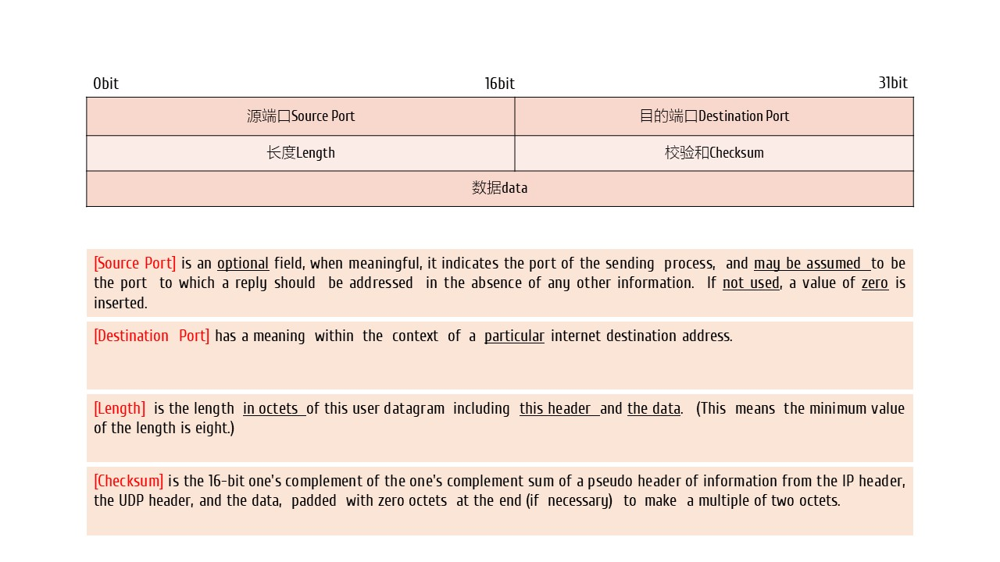
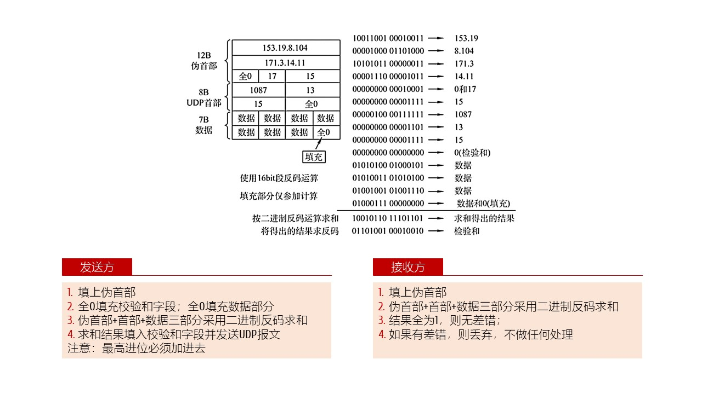
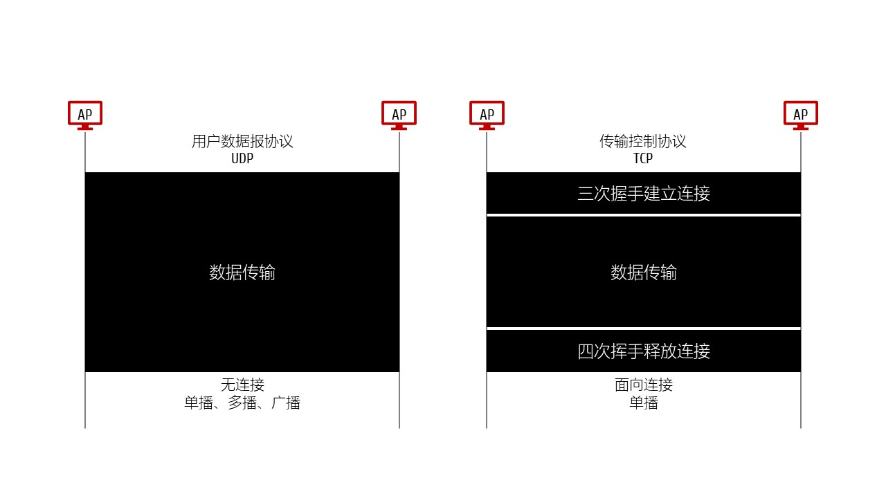
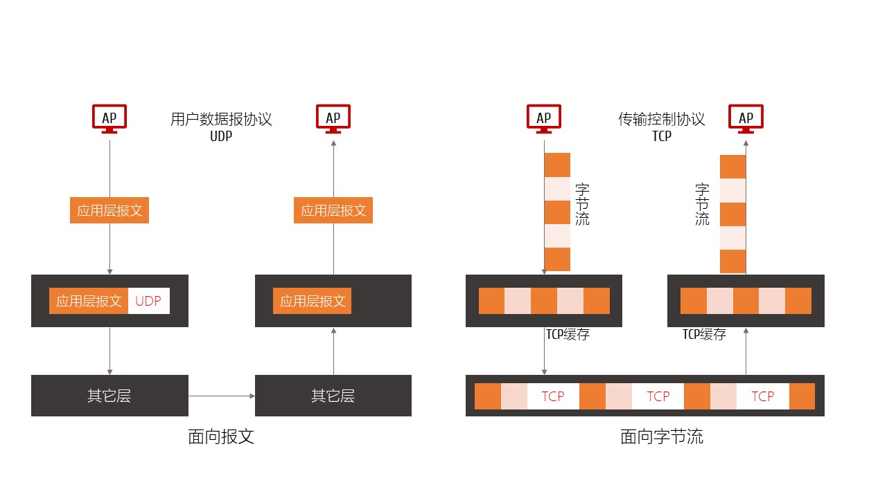

UDP
. UDP - User Datagram Protocol，用户数据报
特点 Features
无连接；最大努力交付best effort delivery；无需确认
面向报文，不拆分；不重装
没有流量控制、没有拥塞控制
首部开销小，最少8个字节，仅包括首部
支持组播、多播；用用于实时通信
. 更多信息，请参考
RFC 768
报文 Packet

校验和 Check Sum

UDP vs TCP
UDP只管发；TCP会控制整个通信过程
UDP不会拆分报文；一个报文就是一个完整的消息；TCP会拆分成诺干字节，形成字节流
UDP发送时无需缓存；TCP必须缓存才能发送，发多少取决于对方的接收窗口；只有被对方接收且确认过的报文才能移除缓存

对比1

对比2